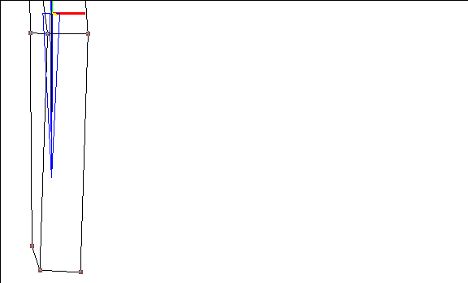

[N-World Contents] [Book Contents] [Prev] [Next] [Index]
Skinning a Skeleton
This chapter describes how to attach a single skin to a skeleton. Single skins act as "envelopes" around a skeleton, and deform to follow the animated skeleton.
In this Chapter
You'll learn how to:
Using Skins and Skeletons
In the previous chapter, you learned how to attach objects to a skeleton (both automatically and manually). In this chapter, we'll learn how to "skin" a skeleton, using an enclosed polyhedra that roughly matches the skeleton we want to animate with.
"Skins" are polyhedron which are attached to a skeleton. Skins differ from attached objects in that each vertex on the polyhedron is associated with the bone it is closest to when you "skin" the skeleton.
When you animate or move a given bone, only the vertices associated with that bone move. For example, if you rotated a forearm upward, the vertices associated with the forearm (and any bones further from the root) would rotate too. The skin "deforms" to follow the motion of the bone.
Skins also support "soft" parts (which enhance the natural appearance of skin around joints) and skin displacements (which allow you to modify the topology of the object based on a selected bone's rotation). Both of these options are discussed in Chapter 5 "Skinning Enhancements" in more detail.
Skinning a Skeleton
For this tutorial, we'll use a sample skin object that is included with the skeletal animation system.
You can attach a skin of any shape to any skeleton; however, to get the best results, you'll typically scale the model down to fit the skeleton before you begin the skinning process.
- Note. If you need to change the size of the skeleton instead of the model, see the section "Copying Motion Data between Skeletons," on page 10-14.
Loading the Skin
1. (CLICK-R) on the N-Geometry window.
2. (CLICK-R) on GeoMenus>Add New Object>Read.
- Enter the pathname for the creature's skin and skeleton:
/usr/local/ngc/demo/objects/
3. (CLICK-R) on Select Several and choose the following two objects:
tutorial-skin-1
tutorial-skeleton-1
- This loads the sample skin and skeleton into the N-Geometry window:
Figure 4.1 Creature skin and skeleton loaded into the 3D editor
Saving a Base State for the Skeleton
When attaching a skin to a skeleton, it's important that you save a "base state" for both objects. Saving a base state for the two objects ensures that you'll always be able to get back to a saved state where the objects are properly aligned.
Once you've saved the base state of the skeleton, you can pose the skeleton, but always return it to its base state if you need to.
Try this:
1. (CLICK-L) on Bodies in the sensitivity element menu along the top of the 3D editor.
2. (SHIFT-L) on the skeleton whose base state you want to save.
3. (CLICK-M) on Base.
- This saves the current position of the skeleton as its base state.
- Note. Skeletons read in from motion capture files typically already have a base state saved. You can select the skeleton, then (CLICK-R) on Base>Select to see a list of base states currently saved for the skeleton.
4. Enter the name of the base state.
- A default name for the base state ("Base") is automatically supplied.
5. Leave Rotate Local Axes? set to Yes and (CLICK-L) on Done.
You've now saved a base state for the skeleton.
When to Resave a Skeleton's Base State
Once you've saved the skeleton's base state, there are several cases where you should resave the base state of the skeleton:
Skinning
To skin the skeleton:
1. (CLICK-L) on Bodies in the sensitivity element menu along the top of the 3D editor window.
2. (SHIFT-L) on the skeleton.
3. (CLICK-L) on Skin.
- Note. If you try to skin a skeleton and no base has been saved for the object, you'll be prompted to save a base state.
Figure 4.2 Saving a base state for the skin
- Just as you did for the skeleton, you should save a base state for the skin. (This ensures that you can return the skin to a state where you know it matches the skeleton's base state.)
4. (CLICK-L) on the skin you want to use and (CLICK-L) on Do It.
- The following dialog box appears:
Figure 4.3 Creating skin parts
5. (CLICK-L) on Yes.
- This logically divides the vertices on the skin into different parts; each vertex is assigned to a part associated with the bone closest to the vertex. The following dialog box appears:
Figure 4.4 Specifying the type of skin parts to be created
6. (CLICK-L) on Make Default Skin Parts.
Hard and soft parts are described in more detail in the section "Soft Parts," on page 5-3.
Testing Your Skin and Skeleton
The next step in the skinning process is to make sure the skin has been attached to the skeleton.
1. (CLICK-L) on segments in the element sensitivity menu along the top of the N-Geometry window.
2. (SHIFT-L) on a bone.
3. (CLICK-R) on Rotate/Twist.
- Move the mouse around; the bone should move, and, as it does, update some of the vertices on the attached skin.
For now, it's enough to move one or two bones to see if the skin is properly attached to the bones.
The "Bubble Gum" Effect: Redefining Skin Parts
When assigning a skin to a skeleton and making skin parts automatically, it's probable that vertices will be assigned to bones that are physically closer, but which shouldn't logically control those skin vertices.
For example, the vertices around a model's hips might be closer to the hand bone when you use the Skin command. If so, they'll be assigned to the hand bone when you make default skin parts, even though the hip bone should be controlling the motion of those vertices.
You can test the automatic skinning by rotating several bones and seeing how well the skin follows. If the vertices on a model are assigned to the wrong bone, you get a "bubble-gum" effect:
Figure 4.5 Vertices on the hip assigned to forearm bone; vertices on the hand assigned to the femur
- Note. Redefining skin parts is necessary only if you find that vertices along the skin are attached to an inappropriate bone.
To reassign a vertex on the skin object to a different bone:
1. Select the vertex or vertices you want to reassign.
2. (SHIFT-L) on the collection.
3. (SHIFT-M) on Add to Part.
- The skin part to which the selected vertex (or vertices) belongs is displayed.
4. (CLICK-L) on the part you want to remove the vertex from.
- Note. If you are working with a collection of vertices, you need to remove the vertices from their respective parts. If the vertices you have collected belong to different skin parts, you can choose All Parts from the dialog box when prompted to specify which parts the vertices should be removed from.
5. (SHIFT-L) on the collection again.
6. (SHIFT-L) on Add to Part.
- Select the part to which you want to add the vertices.
7. (SHIFT-L) on the skeleton.
8. (CLICK-L) on Base.
- This returns the skin and skeleton to their base positions.
9. Use Rotate/Twist again to move the bone and verify that the vertex is now attached to the desired bone.
- After you've verified that all the vertices are attached to the correct bones, you can pose the skeleton using any of the tools described later in this book, and the skins will follow automatically!
Figure 4.6 Posing a skeleton with a skin
Using the Select Skins Command
You can also use the Select Skins command to see which vertices are associated with a bone. To use this command:
1. (SHIFT-L) on the bone whose skin parts you want to view
2. (CLICK-L) on Select Skins.
- The vertices associated with this bone are highlighted in the N-Geometry window.
- Note. You can also use (CLICK-M) or (CLICK-R) to display only the hard or soft parts associated with a particular bone. See the Skeletal Animation System Tutorial
Saving Your Work
When you've finished attaching the skin, you should save your work.
To save a skeleton with a skin, simply save the skeleton. If a skin has been attached to the skeleton, it is saved as well, whether you save the skeleton from N-Geometry or as an element in an N-Dynamics script.
- Note. When saving a skeleton and attached skin, you should always use the .geo format unless you have a specific reason not to!
- Note. If you try to save the skeleton when it's not in a base state, a dialog box appears, allowing you to return the skeleton to its base state before saving.
Only N-Geometry's native .geo format records information such as the base state, poses, and other information required to work with the skeleton again.
Auto Skinning: Specifying Your Own Skin Parts
If you're in a situation where one animator is working with the skeletons and another is designing the skins, the animator in charge of skins can define skin parts that automatically get assigned to the desired bone. Here's an overview of the entire process:
1. Create or load the skeleton that is to be used in the animation.
2. Define the names that are going to be used for each bone on the skeleton.
- You can use the Rename function to rename individual bones on the skeleton. Save a version of the skeleton in its base state that the modeler can reference.
3. The animator animates the skeleton.
4. The modeler creates the skin.
- The modeler also selects which vertices on the model are assigned to each bone on the skeleton, as described below.
Dividing the Skin into Parts
The first step is to build a skin that will eventually be attached to the animator's skeleton.
Once that is complete, you'll want to pick which vertices on the skin are assigned to each bone; you do this by selecting the vertices and making them "parts" with names that are based on the name of the bone.
Suppose you want to define a skin part for the left hand bone:
1. Load both the skeleton with the agreed upon names and the skin you've created.
2. Move the mouse over the left hand bone.
- The name of the bone is displayed in the upper left corner of the N-Geometry window. For this exercise, let's assume you and the the animator agreed to call it "left-hand":
Figure 4.7 (CLICK-L) on the bone to display its name in the upper left corner
3. (CLICK-R) on points in the sensitivity element menu along the top of the 3D editor window.
- This puts you into "collect" mode.
4. Select the vertices you want to assign to the LeftHand bone.

Figure 4.8 Select the vertices you want to assign to the skin part
5. (CLICK-R) when you've collected all the vertices.
- This completes the collection.
6. (SHIFT-L) on the N-Geometry window.
7. (CLICK-L) on Add to Part.
8. (CLICK-L) on Make New Part.
9. Specify the name for the new part.
- Note! Hard parts should be given the name of the bone, followed by the extension "-skin" (include the dash). Hard parts are soft in their scale and twist axes, but hard in the other two.
Figure 4.9 Enter the name for the skin part
10. (CLICK-L) on Make Part.
- This step defines the skin part, but does not assign it.
Repeat the above steps until all the vertices on the skin had been assigned to appropriate skin parts.
Assigning Your Own Skin Parts
11. (CLICK-L) on bodies in the sensitivity element menu along the top of the 3D editor window.
12. (SHIFT-L) on the skeleton.
13. (CLICK-L) on Skin.
14. (CLICK-L) on the name of the skin.
15. (CLICK-L) on Do It.
- The following dialog box appears:
Figure 4.10 Assigning skin parts
16. (CLICK-L) on No.
- You don't want the SAS to create parts; that's what you've just done, so (CLICK-L) on No.
Test the Skin Part
17. (CLICK-L) on segments in the element sensitivity menu.
18. (SHIFT-L) on the left-hand bone.
19. (CLICK-R) on Rotate/Twist.
- Move the bone around to see that the joints are now attached to the named bone.
Figure 4.11 Try rotating the bone to test the manual assignment of skin parts
Check for Vertices Assigned to Multiple Bones
When you animate a skeleton, each vertex on a skin should be driven by the movement of a single bone; if a vertex is assigned to more than one bone and you animate the skeleton, you'll get a "double transformation"-the transformation for both bones are added, then applied to the vertex.
- Note. Skin vertices must be assigned to only one bone!
If you intuitively think that one or more vertices on a particular area of skin should be affected by the movement of more than one bone, it probably means you want to create a soft part for the area containing that vertex to create a natural looking skin deformation. Soft parts are described in more detail in the following chapter.
Congratulations!
You've now learned how to skin a skeleton, reassign vertices on a skin to different bones, make your own skin parts, and isolate vertices assigned to more than one bone.
[N-World Contents] [Book Contents] [Prev] [Next] [Index]
 Another fine product from Nichimen documentation!
Another fine product from Nichimen documentation!
Copyright © 1996, Nichimen Graphics Corporation. All rights
reserved.